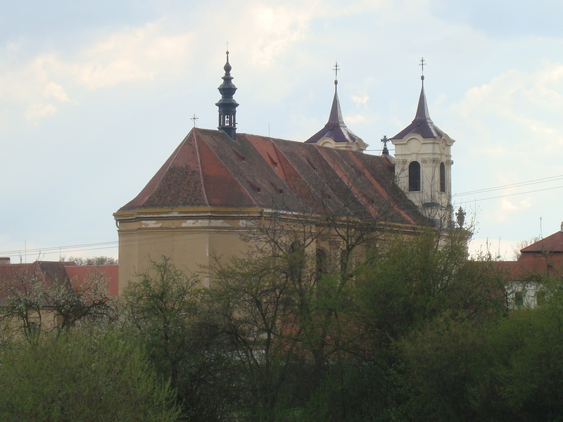
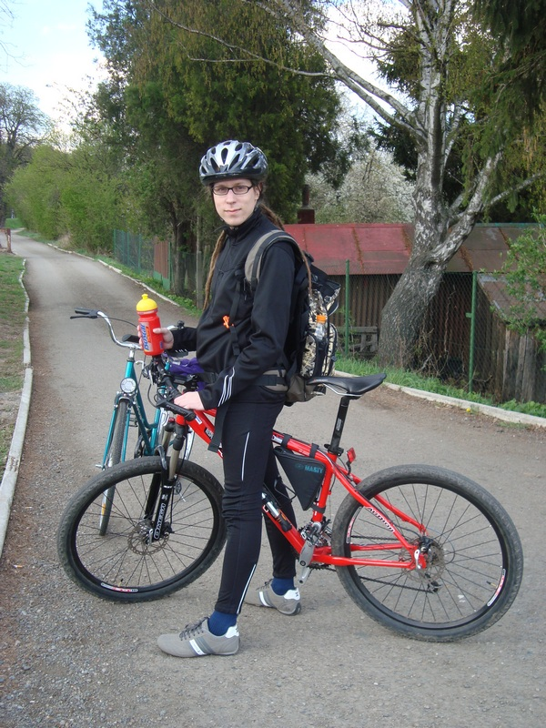
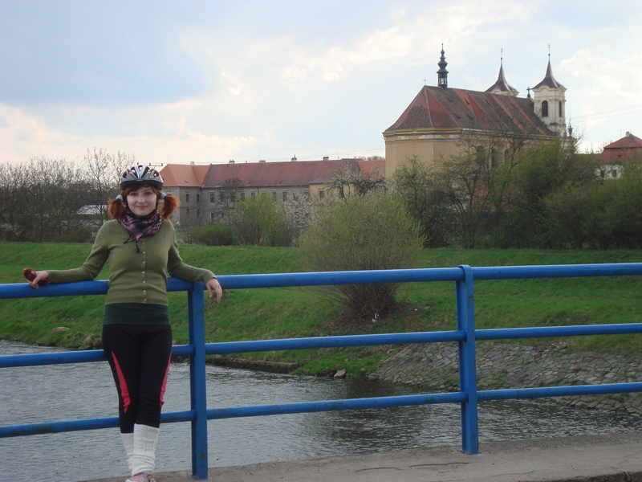
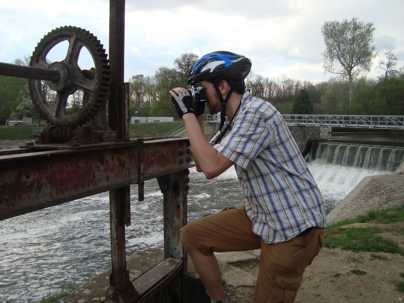

Krásné počasí dnes jistě do sedel bicyklů vylákalo nejednoho nadšence, rozhodla jsem se tedy alespoň prostřednictvím několika fotek (na obšírnou dokumentaci není moc čas) zavzpomínat na minulý víkend, kdy jsme podnikli s Péťou a Míšou první letošní cyklovýlet - do Rajhradu. Výpravu jsme samozřejmě spojili s kešováním i zastávkou v hospůdce :-). A já měla konečně možnost vyzkoušet cyklokalhoty, které přinesl Ježíšek!

Chrám sv. Petra a Pavla v Rajhradě
Výlet začal poněkud kuriozně, protože jsme se museli s Péťou dopravit ne jednom kole do Komárova k Míšovi, kde jsme měli vyzvednout z Míšova “servisu” kolo druhé. Naštěstí to po cyklostezce není daleko, usednula jsem tedy jako za starých časů na nosič a v takto netradiční sestavě jsme se vydali do Komárova :D.

Sportovec!!
První trasa výletu vedla starou známou stezkou k Olympii, kterou jsme si už kdysi na podzim projeli. Přestože počasí toho dne vypadalo tak všelijak a na začátku výletu jsme se museli i na chvíli ukrýt před náhlým deštěm, nakonec se vyčasilo a sluníčko nám vydrželo skoro až do večera. V Rajhradě se nachází benediktinský klášter, který je prý nejstarším klášterem na Moravě. Podle tradice zde dříve stával kostelík, které na své misi navštívili už Konstantin a Metoděj. Rajhradští benediktini měli zásluhu nejen na vzniku nemocnic, chudobinců, sirotčinců a školy, ale také se zde ve 14.století začalo vařit pivo ;-).

Janie před Rajhradem
Nakonec jsme se hezkým okruhem vrátili zpátky do Modřic. No a celková bilance? Najeto 30 km, zimou zlenivělé tělo hezky zničené a zadek navzdory super cyklokalhotám pěkně bolavý. Šrámy jsme si hojili Starobrnem v hospůdce u Trabanta, kde jsem se mimo jiné dozvěděla, že kolem soudu na Polní vede podzemní svítící tunel pro cyklisty. Samozřejmě jsme ho hned při zpáteční cestě museli vyzkoušet :D…

Míša a jeho retro-foťák
Toliko tedy k našemu prvnímu jarnímu cyklovýletu. Počasí nám zatím přeje, tak snad si brzo zase vyjedeme oddechnout od studia a povinností na nějaké další zajímavé místo z brněnského okolí :-).